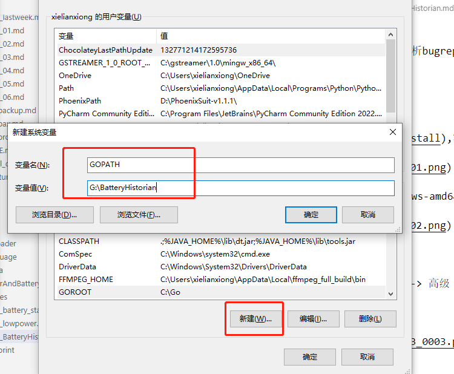

README¶
功耗问题,需要BatteryHistorian图像化分析bugreport
快捷安装¶
最终还是因为被墙原因,没有安装成功,提示 Could not parse aggregated battery stats.
可以用别人安装好的,一键打包安装,只要配好环境就可以了.
https://download.csdn.net/download/weixin_49836860/86320232
如果有翻墙环境,还是建议按照如下步骤安装一把
BatteryHistorian安装¶
安装配置Go语言环境¶
去官网下载,容易被墙

下载对应版本安装,例如 go1.9.5.windows-amd64.msi
配置环境变量
计算机 -> 属性 -> 高级系统设置 -> 高级 -> 环境变量
系统变量,新建 GOROOT
系统变量 ,新建 GOPATH

编辑系统path,添加go/bin
新开一个cmd, 输入 go version,查看是否安装成功

安装python¶
安装python,只支持2.7,由于historian.py脚本是python2写的，所以需要安装python2.7环境。
下载 2.7版本

安装
配置环境变量
把Python27的安装目录添加到系统变量的Path环境变量中
新建cmd串口 ,检查python是否安装成功

安装java¶
安装jdk 1.8本地已经安装了,就不展开了
配置环境变量,已经有了,不展开
在cmd下执行java –version检查是否安装成功并查看当前版本号
下载git,不展开¶
下载源码¶
git clone https://github.com/google/battery-historian.git
创建third_party目录
下载closure-compiler,解压在third_party

下载closure-library,git clone https://github.com/google/closure-library.git

下载flot-axislabels,git clonehttps://github.com/xuanluo/flot-axislabels.git
把源码保存在 BatteryHistorian\src\github.com\google\battery-historian,不然运行报错

在如下路径,BatteryHistorian/src/github.com/golang,下载 git clone https://github.com/golang/protobuf.git

在如下路径,BatteryHistorian/src/google.golang.org,git clone https://github.com/protocolbuffers/protobuf-go.git protobuf
historian-optimized.js 文件放到 battery-historian\compiled下, 如果可以翻墙的化,go run setup.go 应该可以下下来
拷贝cdn 到 third_party 目录下,如果可以翻墙的化,go run setup.go 应该可以下下来

执行命令go run cmd/battery-historian/battery-historian.go
浏览器 登入 http://localhost:9999

填入bugreport分析